Meu nome é Isabelle, tenho 15 anos e atualmente curso Desenvolvimento de Sistemas e Técnicas de
Pintura.
Para me entender de verdade, basta olhar para o meu ecossistema: um mix de códigos sendo testados, telas de pintura pela metade, pilhas de livros acumulados e pastas
milimetricamente organizadas no Pinterest.
Tenho uma mente inquieta. Acredito que a estética, o design e a narrativa importam tanto quanto a funcionalidade de um sistema. Por isso, busco o ponto de equilíbrio entre a lógica exata e a expressão artística.
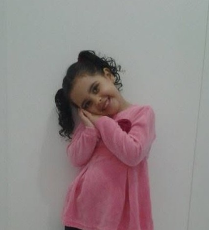
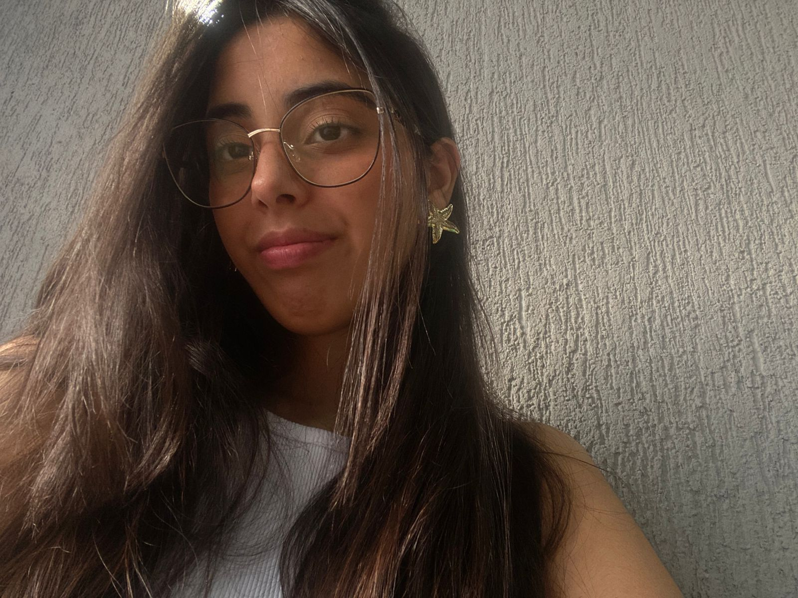
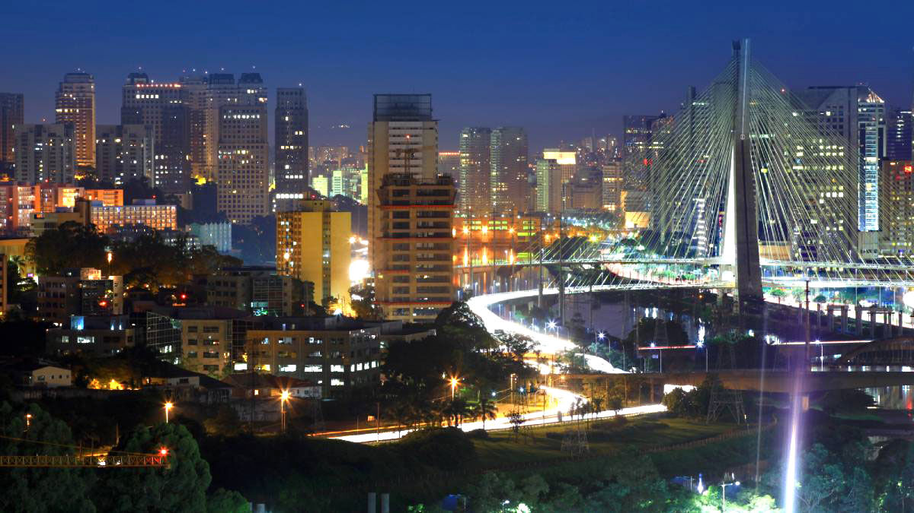
Minha cidade natal, onde cresci e vivo desde que nasci. Em meio ao cenário urbano da metrópole, aprendi a buscar os refúgios visuais e históricos.
Meus pontos favoritos refletem muito essa minha busca por arte e calmaria: a imponência da Catedral da Sé, as tardes tranquilas no Parque Villa-Lobos
e as visitas obrigatórias aos museus nos dias de gratuidade, onde busco inspiração.
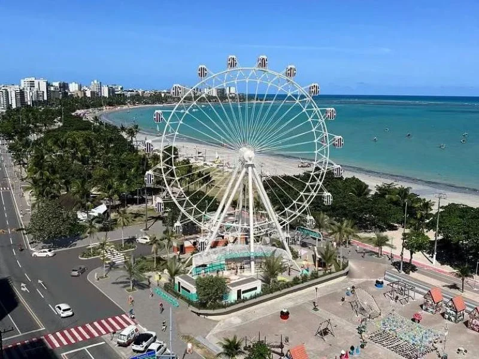
Alagoas é onde encontro minhas raízes. Grande parte da minha família paterna e materna mora em Maceió, que se tornou meu destino favorito nos finais de ano.
Mas o verdadeiro coração dessa viagem é o interior do estado, onde vou para visitar meus avós. É o lugar perfeito para desacelerar da rotina de estudos e me conectar com a família.
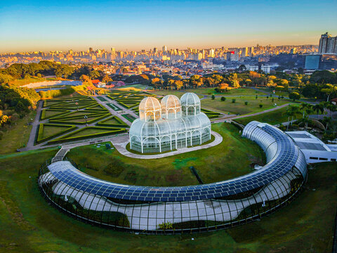
Uma cidade que carrega um valor afetivo muito forte e nostálgico para mim. Sendo a terra de parte da minha família materna,
Curitiba me traz lembranças nítidas da infância, de quando eu viajava para lá com o propósito especial de visitar a minha bisavó.
É um lugar que guardo com muito carinho na minha linha do tempo.
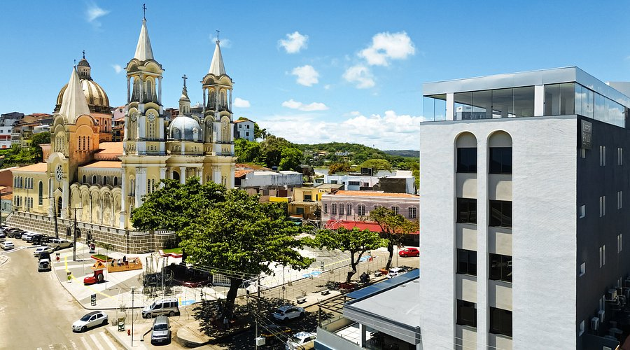
Minha história com a Bahia começou de um jeito único: conheci Ilhéus em 2020 após ganhar um concurso.
Desde então, a cidade do cacau virou uma parada estratégica e muito querida nas viagens de carro que faço rumo a Alagoas.
Uma pausa perfeita para admirar o litoral baiano.
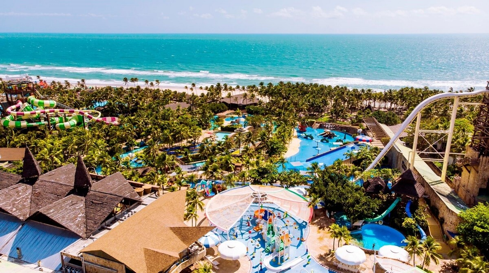
Mais um destino inesquecível que ganhei de presente através da vitória em um concurso, em 2023.
Fortaleza me marcou profundamente pelas paisagens e, principalmente, pelo calor humano. Foi um lugar onde me senti extremamente acolhida e feliz,
e está no topo da minha lista de cidades para onde pretendo voltar assim que puder.
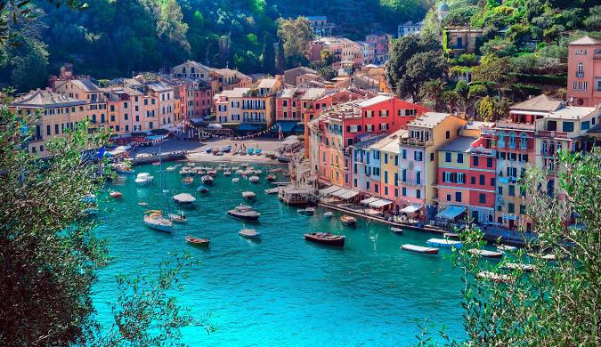
O topo da minha lista de desejos. Quero conhecer a Itália para me perder por suas cidades históricas, absorvendo de perto toda a bagagem cultural,
a gastronomia e a beleza da arquitetura clássica. Sendo alguém que ama desenhar e pintar quadros, estar no berço do Renascimento é a minha maior fonte de inspiração.
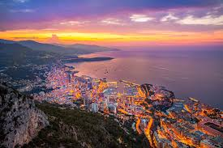
Localizado logo ao lado da Itália, Mônaco desperta muito a minha curiosidade. Quero visitar o principado para observar de perto a sua estética urbana única,
os iates e a paisagem impressionante do litoral. É aquele tipo de destino que parece cenário de filme e que me gera um grande interesse visual.
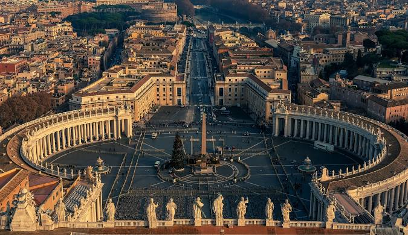
Uma viagem que vai muito além do turismo tradicional e toca na minha essência. Quero muito visitar o Vaticano por ser a sede da minha religião.
Poder ver de perto as basílicas, as praças e toda a grandiosidade espiritual desse lugar tem um significado pessoal e de devoção imenso para mim.
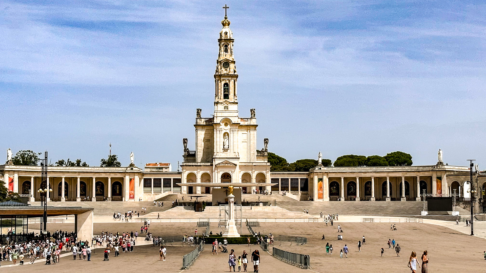
Ainda conectado à minha jornada pessoal e espiritual, meu grande objetivo em Portugal é viajar até Fátima.
Quero conhecer o Santuário para vivenciar aquele ambiente de paz, silêncio e profunda conexão. É um destino que guardo no coração como uma meta de vida.
Porque, no final, não importa quantas mentiras digamos, ou quantas vezes tentamos enterrar o passado.
A verdade está lá, pulsando, cravada em nós como uma cicatriz feia que nunca vai desaparecer por completo.